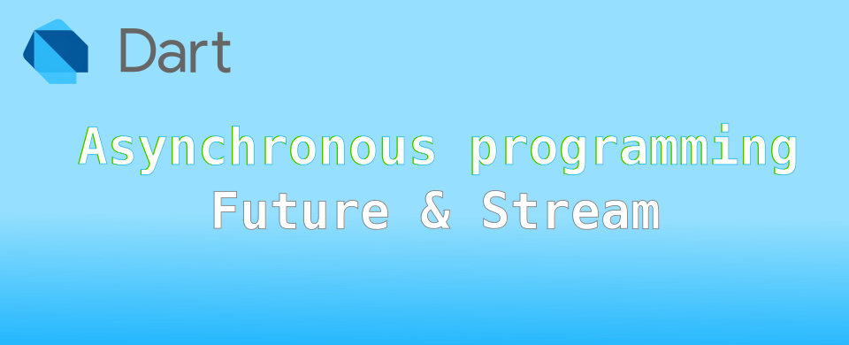

Dart: Asynchronous programming เบื้องต้น

ในบทความนี้จะกล่าวถึงการใช้ class ที่เกี่ยวข้องกับการเขียนโปรแกรม asynchronous
- Future
- Stream
Future
Future เป็น Object ที่จะทำงานใน MicroTask
เมื่อทำงานเสร็จจะส่งค่ากลับมาที่โปรแกรมหลัก โดยการส่งผ่าน call back function โดยตัวมันจะมีสถานะอยู่ 2 สถานะ คือ
- เสร็จแล้ว
- ยังทำงานไม่เสร็จ
และเมื่อทำงานเสร็จแล้ว จะมี 2 ผลลัพธ์คือ
- ทำสำเร็จและคืนค่าถ้ามี
- ทำไม่สำเร็จพร้อม error ที่พบ
void main(List<String> args) {
Future.delayed(Duration(seconds: 2)).then((_) => print('after delay 2 seconds'));
print('end of main');
}
ผลที่ได้
end of main
after delay 2 seconds
ในกรณีที่จำเป็นต้องการการจัดการมากกว่า 1-2 statements แนะนำว่าทำเป็น callback function ดีกว่า ด้านล่างให้ผลเหมือนกัน
void callback(_) {
print('after delay 2 seconds');
}
void main(List<String> args) {
//Future.delayed(Duration(seconds: 2)).then((_) => print('after delay 2 seconds'));
Future.delayed(Duration(seconds: 2)).then(callback);
print('end of main');
}
ถ้าเราต้องการรอให้เสร็จก่อนจึงทำงานใน statement ถัดไป ให้ใช้ await เพื่อรอ Future ทำงานเสร็จ เหมือนโปรแกรม Synchronous ธรรมดา การใช้ await keyword สามารถระบุใน function ที่เป็น async เท่านั้น
void main(List<String> args) async {
//Future.delayed(Duration(seconds: 2)).then((_) => print('after delay 2 seconds'));
await Future.delayed(Duration(seconds: 2)).then(callback);
print('end of main');
}
ผลที่ได้
after delay 2 seconds
end of main
** การใส่ async ที่ด้านหลัง function ไม่ได้ทำให้ function ดังกล่าวเป็น Asynchronous เสมอไป แต่อาจหมายถึงมีการทำงานที่รองานจาก Future/Stream ได้
การใช้ try catch throw ใน Future function
ในการเขียนคำสั่ง try catch สามารถทำได้เหมือนปกติใน synchronous ปกติ แต่ throw จะมีปัญหา หากไม่มี function ที่จะมารองรับผลที่ได้จากการ throw
ตัวอย่าง testNumber เป็น Future<bool> function ที่จะไม่รับเลขติดลบ โดยจะ throw Exception ออกมา
Future<bool> testNumber(int number) async {
print('testNumber($number)');
await Future.delayed(Duration(seconds: 1));
if (number >= 0) {
return number % 2 != 0;
}
throw Exception('only positive number!');
}
ถ้าต้องการใช้ try catch ต้องใช้ await ในการเรียกใช้งาน เพื่อให้โปรแกรมรอรับผลการทำงานรวมถึง Exception ด้วย แต่ถ้าไม่ใส่ await เพื่อรอ เมื่อเกิดการ throw จะไม่มีตัวรับ Exception และโปรแกรมส่วนนี้ก็จะค้างอยู่ในระบบตลอดไปจนผู้ใช้งานสั่งปิดโปรแกรม
try {
if (await testNumber(number)) {
print('$number is odd number');
} else {
print('$number is even number');
}
} catch (e) {
print(e);
}
หากต้องการเรียกให้มันจัดการ error หลังทำงานเสร็จ โดยไม่ใช้ await try catch ให้ใช้การกำหนด function ใน onError: ใน then() แทน
testNumber(number).then((result) {
if (result) {
print('$number is odd number');
} else {
print('$number is even number');
}
}, onError: (e) => print(e));
ถ้ากำหนดให้ number = -1 ผลที่ได้จะเป็น
end of main
Exception: only positive number!
สำหรับตัว onError จะทำงานเหมือน catch(exception, stack) นั้นคือส่งค่า Exception และ Stack นอกจากนี้ยังมี catchError ที่จะช่วยในการดักจับ Error ได้อีกทาง
testNumber(number).then((result) {
if (result) {
print('$number is odd number');
} else {
print('$number is even number');
}
}, onError: (e) {
print('this is onError! throw e to catchError');
throw (e);
}).catchError((e2) => print('Error from catchError = $e2'));
ถ้ากำหนดให้ number = -1 ผลที่ได้จะเป็น
end of main
this is onError! throw e to catchError
Error from catchError = Exception: only positive number!
ในการทำงานจริง หากใน onError ไม่มีการส่ง Exception ออกมา สามารถใช้แค่ catchError อย่างเดียวได้เลย ซึ่งจะเหมาะมากกว่า onError หากมีคำสั่งหลาย ๆ คำสั่ง ทำให้อ่านง่ายกว่าการเอาไปใส่ใน onError
testNumber(number).then((result) {
if (result) {
print('$number is odd number');
} else {
print('$number is even number');
}
}).catchError((e2) => print('Error from catchError = $e2'));
ถ้ากำหนดให้ number = -1 ผลที่ได้จะเป็น
end of main
Error from catchError = Exception: only positive number!
สำหรับส่วนที่ทำงานแบบ finally ก็คือ whenComplete โดยจะทำงานเสมอไม่ว่าจะมี error หรือไม่ก็ตาม ลองทำให้เกิด error ดู
testNumber(-1)
.then((_) => print(".then"))
.whenComplete(() => print('.whenComplete'))
.catchError((e) => print('.catchError $e'));
ผลที่ได้คือ
.whenComplete
.catchError Exception: only positive number!
หากไม่เกิด error คำสั่งใน whenComplete ก็ยังทำงาน
testNumber(1)
.then((_) => print(".then"))
.whenComplete(() => print('.whenComplete'))
.catchError((e) => print('.catchError $e'));
ผลที่ได้คือ
.then
.whenComplete
ป้องกันปัญหา synchronous error ด้วย Future.sync()
จากปัญหาที่หากเขียนโปรแกรม synchronous ใน asynchronous ทำให้ไม่สามารถดักจับ error ได้ถูกต้อง สามารถแก้ไขปัญหาความผิดพลาดดังกล่าวด้วย Future.sync() โดยเอาฟังก์ชั่นที่เขียนขึ้นเข้าไปใส่ข้างใน
เมื่อโปรแกรมที่ใส่เข้าใน Future.sync() คืนค่าเป็น Future<T> มันก็คืนออกมาเป็น Future<T> เหมือนเดิมไม่ได้ไปทำอะไร แต่หากคือค่าที่ไม่ใช่ Future ตัว Future.sync() จะทำการแปลงให้เป็น Future<T> ที่มีสถานะทำงานสำเร็จแล้วคืนไปแทน
await
การใช้งาน await เพื่อลดความสับสนในการทำงานตามลำดับใน asynchronous program เช่น การเขียนฟังก์ชั่นที่จะทำงานโดยเรียก f1 f2 f3 ซึ่งเป็น Future<int> ตามลำดับ โดยผลของการทำงานจะเป็น r1 r2 r3 ตามลำดับ
Future<int> f1() {
return Future.sync(() => 1);
}
Future<int> f2(int r1) {
return Future.sync(() => r1 + 2);
}
Future<int> f3(int r2) {
return Future.sync(() => r2 + 3);
}
void testAwait() {
f1().then((r1) {
f2(r1).then((r2) {
f3(r2).then((r3) {
print(r3);
});
});
});
}
void main() {
testAwait();
print('end main.');
}
ผลที่ได้
end main.
6
ในการเรียก f1 f2 f3 ให้ทำงานตามลำดับในโปรแกรม asynchronous ดูซับซ้อนและหากมีลำดับการทำงานมากกว่านี้จะทำให้แก้ไขและดูแลลำบาก แบบนี้สามารถใช้ await เพื่อรอการทำงานได้
void testAwait2() async {
var r1 = await f1();
var r2 = await f2(r1);
var r3 = await f3(r2);
print(r3);
}
จัดการ Timeout
ในการรอให้งาน asynchronous เสร็จนั้น หากไม่กำหนดเวลา มันก็จะรอไปเรื่อย ๆ จนกว่างานจะเสร็จและส่งผลกลับมาถ้ามี แต่หากในงานที่รอไปเรื่อย ๆ ไม่ได้ สามารถระบุเวลาสูงสุดที่รอได้ หากเกิดเวลาดังกล่าวให้จบการรอและไปทำในส่วนที่ระบุหากเลยเวลาที่กำหนดได้
ตัวอย่าง w1 จะเป็นฟังก์ชั่นที่ใช้เวลา 5 วินาทีถึงจะทำงานเสร็จ และคือค่าเป็นสองเท่าของเลขที่ส่งมา
Future<int> w1(int x) async {
await Future.delayed(Duration(seconds: 5));
return x * 2;
}
void main() {
w1(1).then((x) {
print('result = $x');
});
print('end main.');
}
หากในการทำงานจริง สามารถรอได้แค่ 2 วินาที ให้เพิ่ม .timeout เข้าไป และใส่ฟังก์ชั่นใน onTimeout: เพื่อทำงานหากเกิด timeout
w1(1).then((x) {
print('result = $x');
}).timeout(Duration(seconds: 2), onTimeout: () {
print('timeout');
});
ผลที่ได้ เมื่อครบ 2 วินาที จะพิมพ์ timeout และโปรแกรมจะรอต่อจนครบ 5 วินาที ก็จะพิมพ์ result = 2 ออกมาด้วย
หากไม่ต้องการผลการทำงานของงานหลัง timeout ให้เขียนรับค่าที่คืนมาแทน ผลของส่วนไหนคืนมาก่อนก็ใช้ส่วนนั้น
var x = await w1(1).timeout(Duration(seconds: 2), onTimeout: () => 0);
if (x > 0) {
print('result = x');
} else {
print('timeout');
}
หากไม่กำหนดฟังก์ชั่นใน onTimeout: จะเกิด TimeoutException ขึ้นมา เพื่อใช้กับ try{} ได้
try {
var x = await w1(1).timeout(Duration(seconds: 2));
print('result = x');
} on TimeoutException {
print('timeout');
}
เนื่องจาก Future ไม่ได้ใส่ความสามารถในส่วนของการยกเลิกงานที่ทำค้างเอาไว้แม้จะ timeout ไปแล้วก็ตาม หากต้องการยกเลิกงานที่ทำหลังจาก timeout ให้ใช้ Stream แทนจะตรงการใช้งานมากกว่า เนื่องจากรองรับการยกเลิกได้
Stream
เป็นคลาสที่ออกแบบมาให้ส่งผลการทำงานออกมาตามลำดับแบบ asynchronous ผู้ใช้งานสามารถ Stream API ได้แก่ await for หรือ listen() เพื่อรอรับข้อมูลที่ส่งกลับมาจาก Stream โดยตัว Stream มีอยู่ 2 รูปแบบได้แก่
- single subscription
- broadcast
ตัวอย่าง การสร้างและใช้งาน Stream
Stream<int> countStream(int to) async* {
for (int i = 1; i <= to; i++) {
yield i;
}
}
Future<int> sumStream(Stream<int> stream) async {
var sum = 0;
await for (final value in stream) {
print(value);
sum += value;
}
return sum;
}
Future<void> printResult(Future<int> sum) async {
sum.then((value) => print('Total sum is $value'));
}
void main() {
Stream<int> stream = countStream(3);
Future<int> sum = sumStream(stream);
printResult(sum);
print('end of main');
}
ผลที่ได้
end of main
1
2
3
Total sum is 6
จากตัวอย่าง จะเห็นว่าฟังก์ชั่นไหนที่เป็น Stream จะใช้ yield คืนผลการทำงานแทน return และมี async* ต่อท่ายชื่อฟังก์ชั่น ส่วน await for จะเป็นคำสั่งที่ใช้อ่านค่าจาก Stream มาทีละค่า (ค่าที่ได้จาก yield) จนจบการทำงานของ Stream
ตัว Stream ยังมีคำสั่ง listen() เพื่อสร้าง StreamSubscription ไว้ใช้สำหรับรับข้อมูลที่ได้จาก Stream คล้าย ๆ กับ then() ใน Future เพื่อให้สามารถใช้งานในฟังก์ชั่น synchronous ได้ จากตัวอย่างข้างบน จะลองเขียนใหม่โดยใช้คำสั่ง listen โดยคำสั่งมีรายละเอียดวิธีใช้ดังนี้
StreamSubscription<int> listen(
void Function(int)? onData,
{
Function? onError,
void Function()? onDone,
bool? cancelOnError,
}
)
โปรแกรมที่เขียนใหม่ ที่ได้ผลออกมาเหมือนกัน หากในส่วนการจัดการข้อมูลที่ได้จาก Stream มีคำสั่งไม่มาก แนะนำให้ใส่ไว้ใน onData ก็จะมีข้อดีตรงอ่านและแก้ไขภายหลังง่าย แต่หากมีคำสั่งซับซ้อนให้ส่งต่อไปทำในฟังก์ชั่นที่เขียนแยกออกไปดีกว่า
void main() {
int sum = 0;
var stream = countStream(3);
stream.listen((value) {
print(value);
sum += value;
}, onDone: () => print('Total sum is $sum'));
print('end of main');
}
การจัดการ Error
ตัว Stream สามารถโยน Exception error ได้เหมือนฟังก์ชั่นปกติ โดยใช้คำสั่ง throw ส่วนตัวโปรแกรมที่อ่านค่าจาก Stream สามารถใช้ try{} ในการจัด error เหมือนการทำงานกับ Future
Stream<int> countStream(int to) async* {
for (int i = 1; i <= to; i++) {
if (i == 4) {
throw Exception('Intentional exception');
} else {
yield i;
}
}
}
Future<int> sumStream(Stream<int> stream) async {
var sum = 0;
try {
await for (final value in stream) {
sum += value;
}
} catch (e) {
return -1;
}
return sum;
}
void main() async {
var stream = countStream(10);
var sum = await sumStream(stream);
print(sum); // print → -1
print('end of main');
}
การใช้งาน Stream แบบ Iterable
ข้อมูลที่เป็น Stream จะสามารถใช้ฟังก์ชั่นของ Iterable ได้ เนื่องจากตัวมันจะส่งข้อมูลออกมาเป็นลำดับ เช่น forEach ตัวอย่างข้างล่างจะทำงานรวมผลบวกที่ได้จาก Stream และได้ผลเหมือนโปรแกรมด้านบนที่ผ่านมา
void main() {
int sum = 0;
var stream = countStream(3);
stream.forEach((value) => sum += value).then((_) => print(sum));
print('end of main');
}
ผลที่ได้คือ 6 โดย forEach จะคืนค่ากลับมาเป็น Future<void>
Future<void> forEach(void Function(int) action)
ดังนั้นเมื่อทำ forEach เสร็จแล้วจึงสามารถใช้ then() เพื่อทำงานเมื่อ Stream ส่งข้อมูลมาหมดแล้ว (ในตัวอย่างคือ 1 2 3)
อีกตัวอย่าง ใช้ reduce ในการหารวมผลรวม
void main() {
var stream2 = countStream(3);
stream2.reduce((previous, element) => previous + element).then((sum2) => print(sum2));
print('end of main');
}
ในกรณีที่ต้องการใช้ await แทน then ในฟังก์ชั่นที่เป็น async ก็สามารถใช้งานได้เช่นกัน
void main() async {
var stream2 = countStream(3);
int sum2 = await stream2.reduce((previous, element) => previous + element);
print(sum2);
}
ดูคำสั่งอื่น ๆ ทั้งหมด https://dart.dev/libraries/async/using-streams#process-stream-methods
Stream แบบ single subscription
เป็น Stream ที่ออกแบบมาให้ผู้ที่ใช้งานต้องรับข้อมูลตั้งแต่ต้น ไม่สามารถมาขอใช้งานข้อมูลระหว่างการประมวลผลของ Stream ได้ หากพยายามขอใช้งานข้อมูลซ้ำซ้อนจะได้ Exception error → Bad state: Stream has already been listened to. ที่เป็นแบบนี้เนื่องจากงานที่ใช้ single subscription จะเป็นงานประเภทอ่านข้อมูลจากไฟล์ จากเน็ตเวิร์ค จาก web request ซึ่งจำเป็นต้องได้ข้อมูลตามลำดับตั้งแต่เริ่มต้นจนจบ การได้ข้อมูลระหว่างทางได้ข้อมูลไม่ครบถ้วนจึงเป็นเรื่องที่ไม่สมเหตุสมผล
void main() {
var stream = countStream(3);
// first listen
stream.listen((value) {});
// try add more listen (Bad state here!)
stream.listen((value) {});
print('end of main');
}
ผลที่ได้ จะเกิด Excption error โดย #3 จะระบุไปที่แถวของคำสั่งที่พยายามจะ listen ซ้ำ ในที่คือที่ไฟล์ stream_demo.dart แถวที่ 35 คอลัมน์ที่ 10
Unhandled exception:
Bad state: Stream has already been listened to.
#0 _StreamController._subscribe (dart:async/stream_controller.dart:686:7)
#1 _ControllerStream._createSubscription (dart:async/stream_controller.dart:837:19)
#2 _StreamImpl.listen (dart:async/stream_impl.dart:497:9)
#3 main (file:/// stream_demo.dart:35:10) stream_demo.dart:35
#4 _delayEntrypointInvocation.<anonymous closure> (dart:isolate-patch/isolate_patch.dart:297:19)
#5 _RawReceivePort._handleMessage (dart:isolate-patch/isolate_patch.dart:184:12)
Stream แบบ Broadcast streams
เป็น Stream ที่ทำงานในลักษณะให้ข้อมูลล่าสุดออกมาเรื่อย ๆ การใช้งานไม่จำเป็นต้องสนใจข้อมูลที่เคยส่งออกมาแล้ว เช่น
- events ของ keyboard หรือ mouse
- ข้อมูลเสียงจากการฟังวิทยุ online
- การประกาศข้อมูลปรับปรุงล่าสุดของ Database service
เมื่อมีการ listen() ข้อมูลที่ได้จะเป็นข้อมูลที่ได้หลังจากลงเบียนไปแล้ว และสามารถ listen() ได้เกิน 1 จุด เมื่อไหร่ก็ได้ แต่ข้อมูลที่มีก่อนหน้าจะทำเรียก listen() จะไม่สามารถเรียกดูได้
ตัวอย่างที่พบบ่อยในงานเขียนโปรแกรมกับคลาวน์ เช่น ติดต่อฐานข้อมูล Firebase Realtime Database ที่สามารถเขียนโปรแกรม เพื่อ listen() ตำแหน่งโหนดที่มีการเปลี่ยนแปลง และนำข้อมูลล่าสุดมาแสดงในแอป
เมื่อต้องการยกเลิกการ listen() สามารถใช้ cancel() เพื่อจบการรับค่าที่ได้จาก StreamSubscription
(เอกสารอ้างอิง StreamSubscription → https://api.dart.dev/stable/3.4.4/dart-async/StreamSubscription-class.html)
วิธีการสร้าง Stream ด้วย StreamController
การสร้าง single subscription stream
ในการสร้าง Stream แบบ single subscription ที่ดีควรจะรองรับการทำงาน 2 อย่างคือ
- ตัว Stream จะเริ่มทำงานเมื่อมีการ listen()
- ต้องสามารถหยุดการทำงานชั่วคราว pause() และ resume() ได้
StreamController จะมีตัวแปรที่ใช้ตอนสร้าง Stream ดังนี้
StreamController<T>({
void onListen()?,
void onPause()?,
void onResume()?,
FutureOr<void> onCancel()?,
bool sync = false
})
เวลาที่เขียนฟังก์ชั่นที่เป็น Stream ก็ให้คืน Stream ที่สร้างจาก StreamController กลับไปให้ตัวเรียกฟังก์ชั่น ตัวอย่างด้านล่างนำมาจาก https://dart.dev/libraries/async/creating-streams#honoring-the-pause-state
เป็นการสร้างตัวจับเวลา จะคืนค่าเป็นตัวนับเวลาที่ผ่านไปเรื่อย ๆ จนครบค่า maxCount หากระบุ การจับเวลาจะใช้ Timer เพื่อนับเวลาไปเรื่อย ๆ โดยจะมีฟังก์ชั่น
- startTimer() และ stopTimer() เป็นตัวเริ่มและหยุด Timer
- tick() สำหรับส่งค่าตัว counter ที่นับได้กลับไป และตรวจสอบว่านับจนถึง maxCount หรือยัง
การทำงานก็เพียงสร้าง StreamController โดยระบุฟังก์ชั่นข้างต้นไป ส่วนวิธีการส่งค่าของ Stream กลับไป จะใช้ add() ของตัว StreamController แทนคำสั่ง yield
Stream<int> timedCounter(Duration interval, [int? maxCount]) {
late StreamController<int> controller;
Timer? timer;
int counter = 0;
// ตัวนับเวลา
void tick() {}
// เมื่อมีการ listen() และ resume()
void startTimer() {}
// เมื่อต้องการ pause() หรือ cancel()
void stopTimer() {}
controller = StreamController<int>(
onListen: startTimer,
onPause: stopTimer,
onResume: startTimer,
onCancel: stopTimer);
return controller.stream;
}
เมื่อทำการ listen() ตัว StreamController เรียก startTimer() เพิ่มเริ่มจับเวลา เมื่อครบเวลา interval ตัว Timer ก็จะไปเรียก tick() เพื่อเพิ่มค่า counter และส่งค่า counter กลับไปที่ตัวเรียก Stream
void startTimer() {
timer = Timer.periodic(interval, tick);
}
ในการควบคุมการทำงาน tick() จะตรวจสอบว่ามีการกำหนดค่า maxCount ด้วยหรือไม่ ถ้ามี จะตรวจสอบว่าถ้านับครบแล้วจะจบการทำงานของ Stream โดยเรียกคำสั่ง close()
void tick() {
counter++;
controller.add(counter); // Ask stream to send counter values as event.
if (counter == maxCount) {
timer?.cancel();
controller.close(); // Ask stream to shut down and tell listeners.
}
}
เมื่อผู้ใช้งานต้องการหยุดการนับชั่วคราว จะเรียกคำสั่ง pause() จากตัว StreamSubscription โปรแกรมจะไปเรียก stopTimer() เพื่อหยุดการทำงานชั่วคราว และเมื่อผู้ใช้งานเรียก resume() โปรแกรมจะไปเรียก startTimer() เพื่อสร้าง Timer เพื่อนับเวลาต่อ
void stopTimer() {
timer?.cancel();
timer = null;
}
ข้อควรทราบ เมื่อมีการเรียก pause() ตัว Stream จะยังคงอยู่จนกว่าจะมีคำสั่ง resume() เพื่อทำงานต่อ แต่หากในโปรแกรมที่เหลือไม่มีคำสั่ง resume() ตัว StreamController จะถูก close() อัตโนมัติเมื่อจบโปรแกรม
ลองเรียกใช้งาน
void main() {
var myTimer = timedCounter(Duration(seconds: 1), 3);
myTimer.listen((event) => print(event));
print('end of main');
}
ผลที่ได้ จะพิมพ์ ค่า counter ทุก 1 วินาที เมื่อครบ 3 จะจบโปรแกรม
end of main
1
2
3
การสร้าง broadcast stream
อ้างอิงจาก https://api.dart.dev/stable/3.4.4/dart-async/StreamController/StreamController.broadcast.html
สำหรับ Broadcast streams จะมีจุดที่แตกต่างคือ สามารถ listen() ได้มากกว่า 1 ครั้ง เมื่อผู้ใช้งานเรียกใช้ pause() ตัว StreamController จะหยุดส่งข้อมูลให้แต่ตัว Stream ดังกล่าว แต่ยังทำงานต่อไปเรื่อย ๆ และส่งข้อมูลให้ตัวรับฟังตัวอื่น ๆ และทำการ buffer ข้อมูลสำหรับตัวที่ pause() จนกว่าจะเรียก resume() เมื่อเรียก resume() ข้อมูลที่อยู่ใน buffer จะถูกให้ส่งมาให้ทันที ในกรณีที่ทำการ cancel() ตัว StreamController จะยกเลิก buffer ที่เก็บไว้สำหรับตัวเรียกที่ cancel()
การจัดสรรเหตุการณ์ จะทำแยกกันตามการผู้ที่เรียกใช้ listen() โดยหากไม่มีการลงทะเบียนขอใช้งานเลยตั้งแต่สร้าง Stream ตัว StreamController จะไม่ทำอะไร และจะเริ่มทำงานเมื่อมีการ listen() อย่างน้อย 1 รายการ และจะหยุดการทำงานเมื่อทุกผู้เรียกอันทำการ cancel() จนหมด
StreamController<T>.broadcast({
void onListen()?,
void onCancel()?,
bool sync = false
})
สำหรับตัวแปร sync จะเป็นการใช้งานแบบ SynchronousStreamController ซึ่งจะไม่พูดถึงในบทความนี้
ตัวอย่าง จะเป็นการดัดแปลงตัวอย่างก่อนหน้า timedCounter ให้ทำงานแบบ broadcase stream
Stream<int> timedCounter(Duration interval, [int? maxCount]) {
// same as before
controller = StreamController<int>.broadcast(onListen: startTimer, onCancel: stopTimer);
return controller.stream;
}
ในคำสั่งสร้าง StreamController จะใช้ broadcast() แทน ในส่วนของโปรแกรม main() ที่เรียก จะจำลองว่ามีตัวที่ 2 ทำการ listen() ช้าไป 2 วินาที
void main() {
var myTimer = timedCounter(Duration(seconds: 1), 3);
myTimer.listen((event) => print('#1 $event'));
Future.delayed(Duration(seconds: 2), () => myTimer.listen((event) => print('#2 $event')));
print('end of main');
}
ผลที่ได้ ตัว #2 ที่เข้ามา listen() ช้าไป 2 วินาที จะได้ค่าจาก Stream กลับมาแค่ 3 เพียงค่าเดียวแล้วจบการทำงาน
end of main
#1 1
#1 2
#1 3
#2 3
ส่งท้าย
การเขียนโปรแกรมเพื่อสร้างแอปที่ใช้งานในปัจจุบัน มีการใช้งานที่ซับซ้อนและใช้ระบบ parallel processing ทำงานขนานกันพร้อมกันเป็นอย่างมาก ดังนั้นการเข้าถึงวิธีการเขียนและจัดการโปรแกรมแบบ asynchronous จึงมีความสำคัญมาก ที่ยกตัวอย่างมาด้านบนเป็นเพียงพื้นฐานที่ต้องทราบ แต่ในการใช้งานจริงจำเป็นต้องมีทักษะในการนำเอาส่วนที่เป็น asynchronous มาใส่ในแอป โดยที่สามารถกลับมาอ่านและทำความเข้าใจได้ง่าย เพราะการทำงานมันไม่เรียงลำดับ การที่เขียนโปรแกรมโดยไม่สนใจการกลับมาแก้ไขถือว่าเป็นการสร้างหนี้ทางเทคนิค (Technical debt)ที่รอวันระเบิด 🤯💣💥